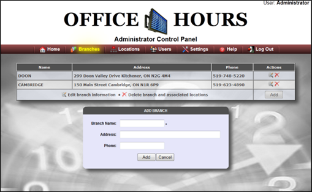

Once the User is logged into the Administrator control panel, the User name will appear on the top right corner of the web page as Administrator and allows the User to access Branches, Locations, Users, and web page Settings. And, in case the User wants to Log off, the User can select the Log off option.

Created with the Personal Edition of HelpNDoc: Easily create PDF Help documents